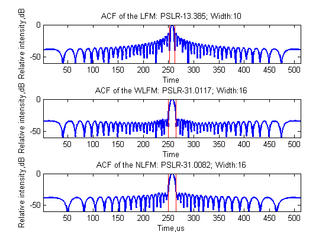

clc;clear;close all;
load data
kr=Band/Tr;
t=(0:1/fs:Tr-1/fs);
sig_lfm=exp(1i*pi*kr*(t-Tr/2).^2);
Nr=length(t);
efc_num=Nr*Band/fs;
efc_num=double(int16(efc_num/2)*2);
window = 0*sig_lfm;
window(Nr/2-efc_num/2:Nr/2+efc_num/2-1)= taylorwin(efc_num,4,-33.797);
hf=fftshift(window).*fft(sig_lfm);
sig_lfm_fre=fft(sig_lfm);
acf_lfm=sig_lfm_fre.*conj(fft(sig_lfm));
acf_lfm=ifft(acf_lfm);
acf_wlfm=sig_lfm_fre.*conj(hf);
acf_wlfm=ifft(acf_wlfm);
hf2=fft(sig_nlfm);
sig_nlfm_fre=fft(sig_nlfm);
acf_nlfm=sig_nlfm_fre.*conj(hf2);
acf_nlfm=ifft(acf_nlfm);
amp_lfm=abs(acf_lfm)/max(abs(acf_lfm(:)));
amp_lfm=fftshift(amp_lfm);
amp_lfm=20*log10(amp_lfm);
amp_wlfm=abs(acf_wlfm)/max(abs(acf_wlfm(:)));
amp_wlfm=fftshift(amp_wlfm);
amp_wlfm=20*log10(amp_wlfm);
amp_nlfm=abs(acf_nlfm)/max(abs(acf_nlfm(:)));
amp_nlfm=fftshift(amp_nlfm);
amp_nlfm=20*log10(amp_nlfm);
figure;lw=2;
subplot(211)
plot(t/1e-6,real(sig_nlfm),'LineWidth',lw);
hold on
plot(t/1e-6,imag(sig_nlfm),'r','LineWidth',lw);
xlabel('Time,us');ylabel('Amplitude,V');
title('NLFM Signal');
legend('Real part','Imaginary part');
axis([t(1)/1e-6 t(end)/1e-6 -1 1]);
subplot(212)
plot(t/1e-6,real(sig_lfm),'LineWidth',lw);
hold on
plot(t/1e-6,imag(sig_lfm),'r','LineWidth',lw);
xlabel('Time,us');ylabel('Amplitude,V');
title('LFM Signal');
legend('Real part','Imaginary part');
axis([t(1)/1e-6 t(end)/1e-6 -1 1]);
figure;
subplot(121)
baxis=1e-6*(-fs/2:fs/Nr:fs/2-fs/Nr);
psd=fftshift(abs(sig_nlfm_fre));
plot(baxis,psd,'LineWidth',lw);title('NLFM PSD');
xlabel('Frequncy,MHz');ylabel('Amplitude');
subplot(122)
psd=fftshift(abs(sig_lfm_fre));
plot(baxis,psd,'LineWidth',lw);title('LFM PSD');
xlabel('Frequncy,MHz');ylabel('Amplitude');
figure
plot(t/1e-6,(amp_wlfm),'linewidth',lw);hold on;plot(t/1e-6,(amp_nlfm),':r','linewidth',lw);
legend('WLFM','NLFM');
xlabel('Time,us');ylabel('Relative intensity,dB');
axis([t(1)/1e-6 t(end)/1e-6 -60 0]);
figure
subplot(311)
amp=amp_lfm;
plot((amp),'linewidth',lw);[pslr, idx_l,idx_r]=QualityM(amp);
rectangle('Position',[idx_l,min(amp),(idx_r-idx_l),max(-amp)],'EdgeColor','r','Linewidth',1);
title(['ACF of the LFM: PSLR',num2str(pslr),'; Width:',num2str(idx_r-idx_l)]);
xlabel('Time');ylabel('Relative intensity,dB');
axis([1 Nr -60 0]);
subplot(312)
amp=amp_wlfm;
plot(amp,'linewidth',lw);[pslr, idx_l,idx_r]=QualityM(amp);
rectangle('Position',[idx_l,min(amp),(idx_r-idx_l),max(-amp)],'EdgeColor','r','Linewidth',1);
title(['ACF of the WLFM: PSLR',num2str(pslr),'; Width:',num2str(idx_r-idx_l)]);
xlabel('Time');ylabel('Relative intensity,dB');
axis([1 Nr -60 0]);
subplot(313)
amp=amp_nlfm;
plot(amp,'linewidth',lw);[pslr, idx_l,idx_r]=QualityM(amp);
rectangle('Position',[idx_l,min(amp),(idx_r-idx_l),max(-amp)],'EdgeColor','r','Linewidth',1);
title(['ACF of the NLFM: PSLR',num2str(pslr),'; Width:',num2str(idx_r-idx_l)]);
xlabel('Time,us');ylabel('Relative intensity,dB');
axis([1 Nr -60 0]);
